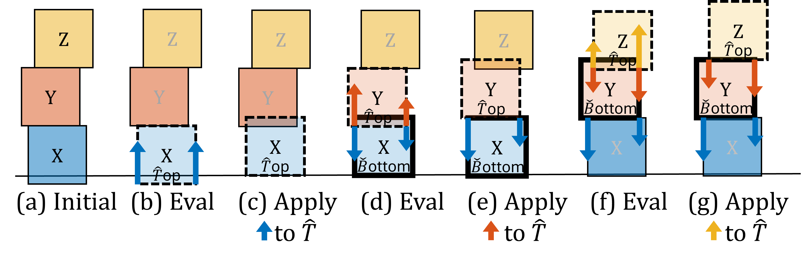
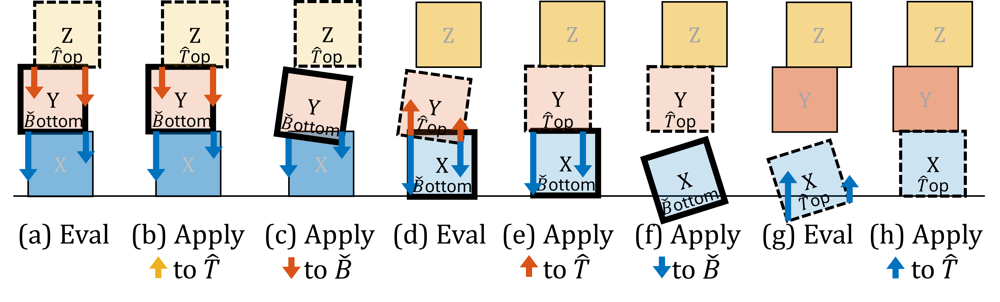
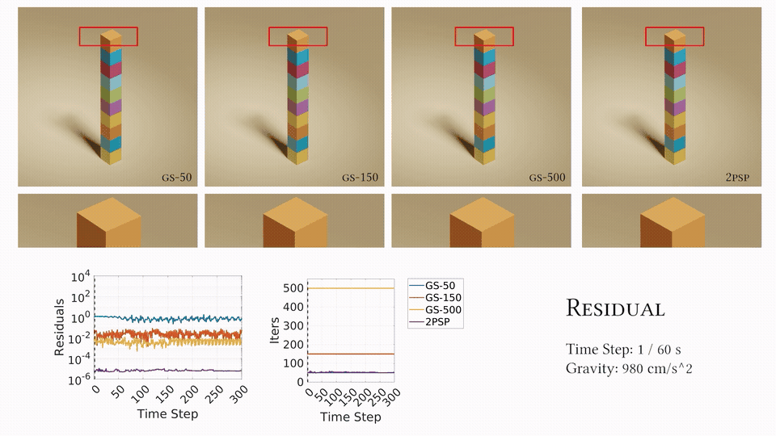
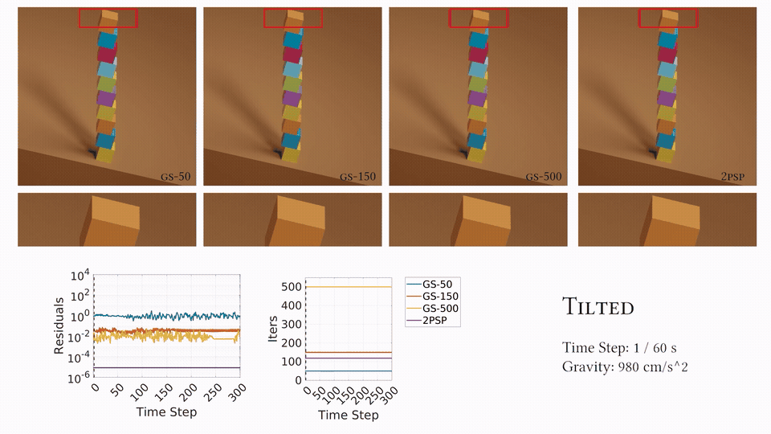
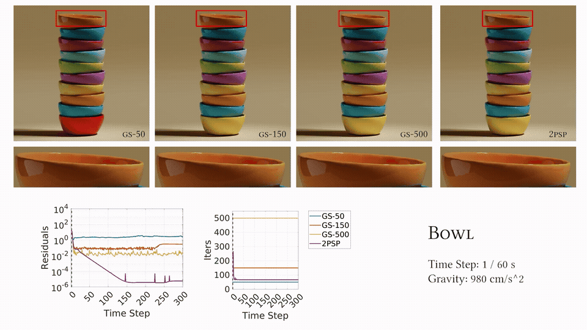
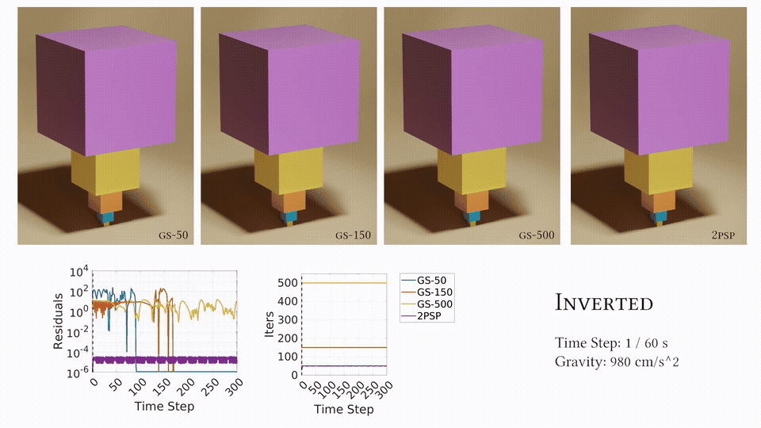
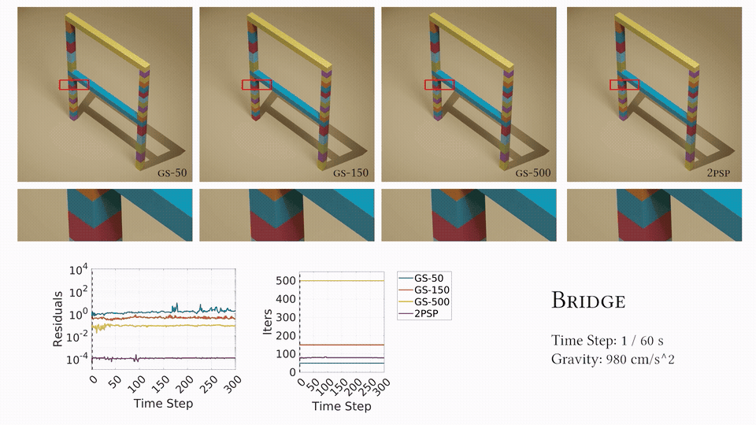
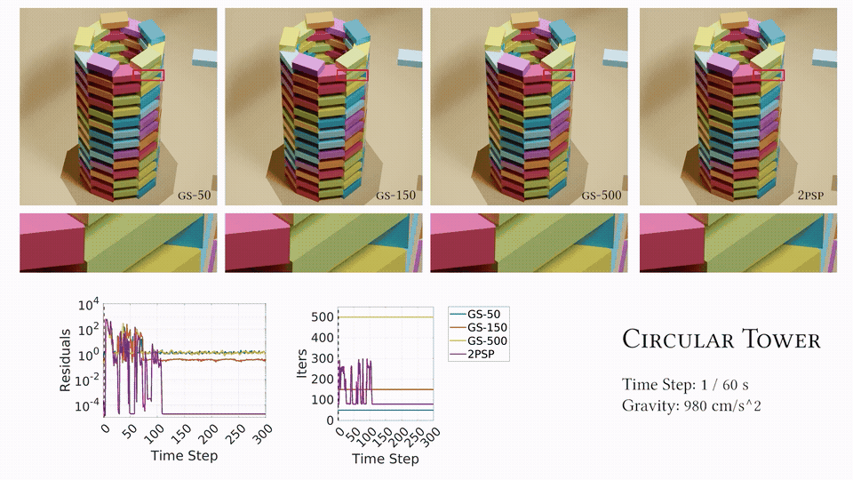
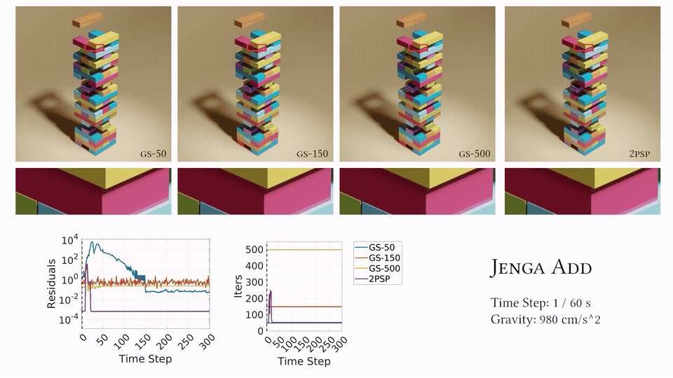

Fig 1. Stacking. Stacking is common in both everyday life and industrial production. Our two-pass shock propagation method enables stable stacking of complex structures in realistic settings.
Introduction
Over the years, PhysX has gained popularity as a physics library for real-time graphics and robotics.
Although widely popular, PhysX and other Gauss–Seidel-based methods for rigid body simulation face a significant limitation: instability in handling frictional stacking.
To demonstrate such limitation, we present two scenarios below. The first video shows the reuslt from PhysX while simulating large objects. The second video demonstrates the artifacts from PhysX while simulating table-top sized objects.
Video 1: PhysX stacking Large Objects. By setting the gravity to 9.81 m/s², we set the unit for simulation to meters. Then the box length will be 4 meters, and density will be 10 kg/m^3 which means one box in this simulation will be larger than a car and only have 1% density of water.
Video 2: PhysX stacking Table-Top Objects. After changing the unit to cm and density to 1 g/cm^3 which is close to the density of oak, we surprisingly find that PhysX can’t get stable results.
Methodology
The instability inherent in Gauss–Seidel approaches arises from the slow propagation of information between rigid bodies. To address this, we leverage shock propagation and design a two-pass shock-propagation method.

Fig 2. Shock Propagation Upward Pass. The upward pass of our two-pass shock-propagation method is similar to the standard shock-propagation method but we record the impulses that did not get applied to the Bottom body in each layer.
After the upward pass, we begin the downward pass from the top layer to the bottom layer. In this pass, we apply the recorded impulses from the upward pass to each layer.

Fig 3. Shock Propagation Downward Pass. The downward pass of our two-pass shock-propagation method applies the recorded impulses first then solve the newly introduced constraints violation.
Results
We tested our method on varying scenes and compared the results with the Gauss–Seidel solver with different iterations.

A stacking scene with 10 boxes, each measuring 4x4x4cm^3 and weighing 64g.

By tilting the ground plane, we verify that our approach works with non-vertical normals.

Our method works for convex objects as well.

Our method can readily handle this challenging scenario involving large mass ratios.

This scene features large cycles in the contact graph as well as boxes of unequal size.

We throw a box into a circular tower formed by boxes.

A block is first dropped onto a tower of blocks.
BibTeX
@article{10.1145/3747867,
author = {Xiong, Ziyan and Leach, Andrew and Thomas, Griffith and Sueda, Shinjiro},
title = {Two-Pass Shock Propagation for Stable Stacking with Gauss-Seidel},
year = {2025},
issue_date = {August 2025},
publisher = {Association for Computing Machinery},
address = {New York, NY, USA},
volume = {8},
number = {4},
url = {https://doi.org/10.1145/3747867},
doi = {10.1145/3747867},
journal = {Proc. ACM Comput. Graph. Interact. Tech.},
month = aug,
articleno = {46},
numpages = {18}
}